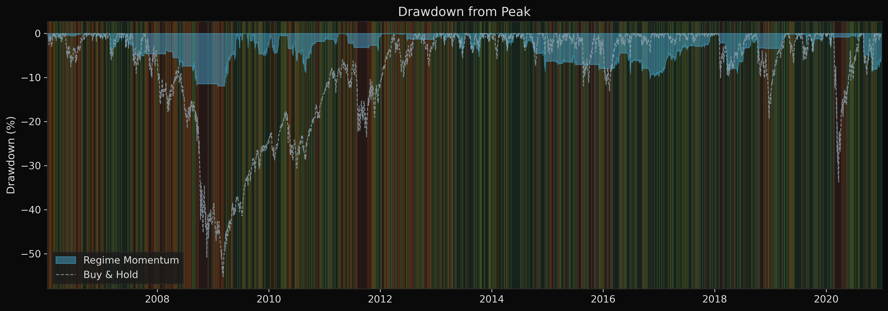
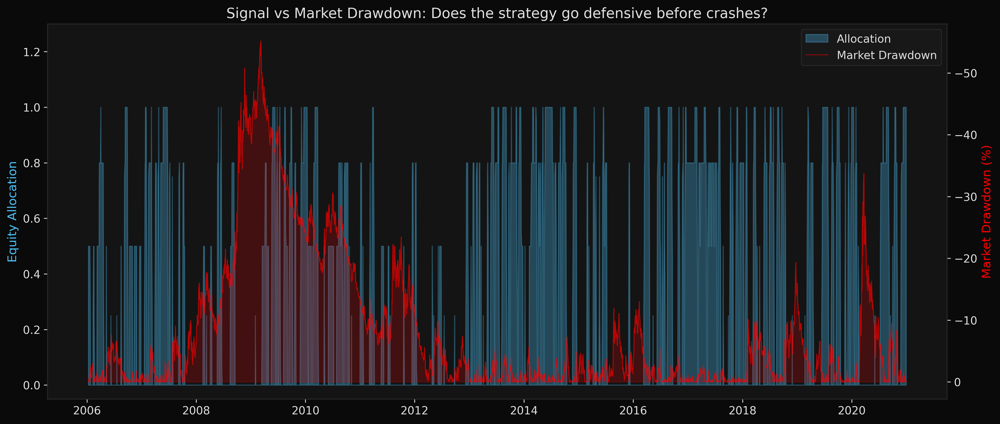
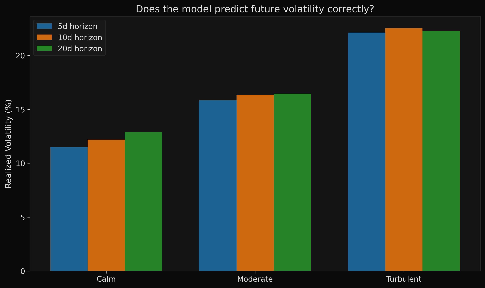
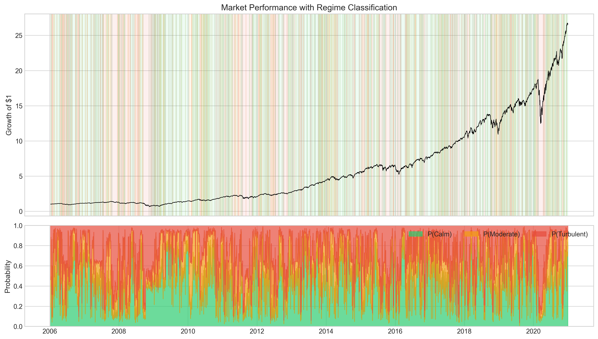
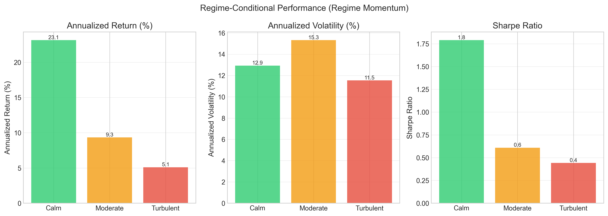
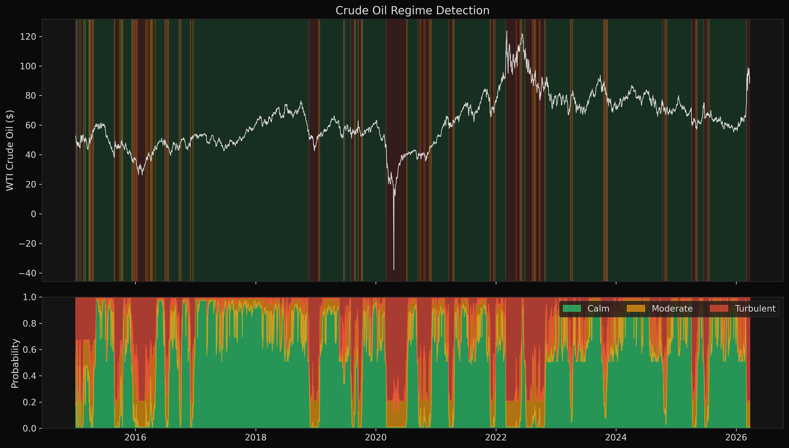
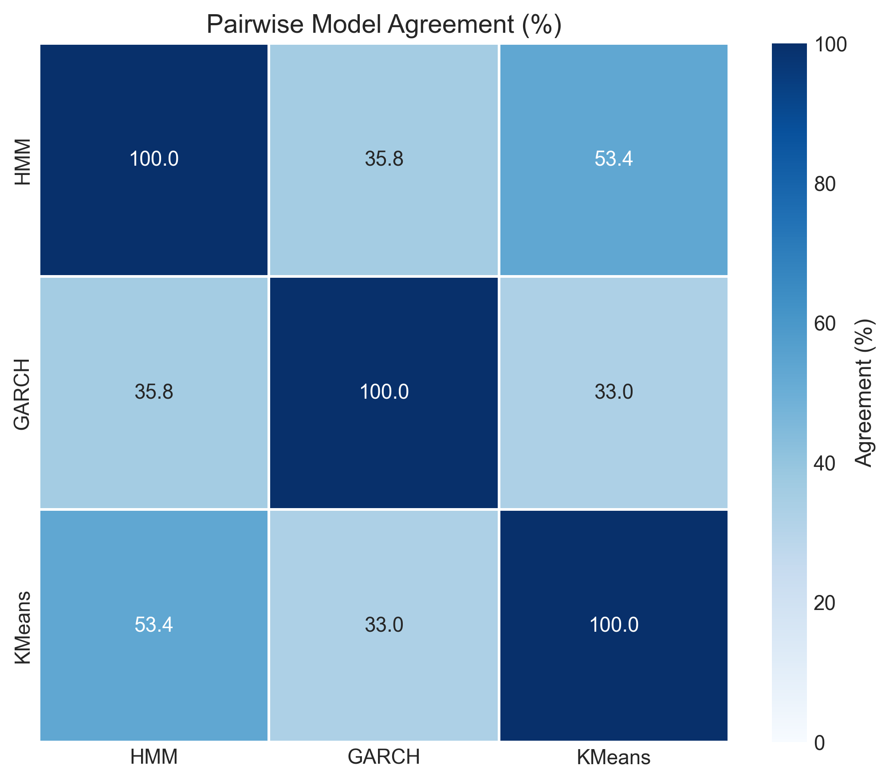
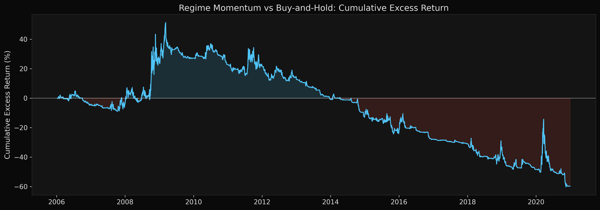

September 2008. The S&P 500 lost 30% in three weeks.
Most systematic strategies were fully invested when the crash hit. This system detected the regime shift six days earlier. By September 19, allocation had dropped from 85% to 12%.
Equity curves, after costs.
Hover for daily values. Click the legend to toggle strategies. Drag to zoom.

| Strategy | CAGR | Vol | Sharpe | Max DD | Turnover |
|---|---|---|---|---|---|
| Regime Momentum | 10.2% | 9.3% | 0.70 | −27.7% | 5.7× |
| Binary Regime | 7.5% | 12.5% | 0.49 | −35.8% | 10.6× |
| Vol-Managed | 6.6% | 10.5% | 0.47 | −23.7% | 1.7× |
| SMA 200 | 7.0% | 11.7% | 0.47 | −21.9% | 6.0× |
| Buy & Hold (SPY) | 9.6% | 20.1% | 0.46 | −55.2% | 0.0× |
Allocation leads drawdown.

Five models, one ensemble.
- HMM · 5-state Gaussian, remapped to 3, transition persistence Feature-space
- GARCH(1,1) Student-t · conditional volatility clustering Return-based
- K-Means · feature-space clustering Feature-space
- Gaussian Mixture Model · Bayesian posterior probabilities Feature-space
- Markov-Switching · Hamilton 1989, regime-dependent variance Return-based
Walk-forward validation, expanding window, quarterly refit. Fifty-nine windows, 3,771 out-of-sample predictions. SPY benchmark. One-day execution lag. Asymmetric confirmation filters.
Walk-forward loop
while train_end_idx + step_days <= n_total:
train = feature_df.iloc[:train_end_idx]
test = feature_df.iloc[train_end_idx:test_end_idx]
probs = {
"hmm": fit_predict_hmm(train, test),
"garch": fit_predict_garch(train, test),
"kmeans": fit_predict_kmeans(train, test),
"gmm": fit_predict_gmm(train, test),
"ms": fit_predict_markov_switching(train, test),
}
combined = ensemble.combine(probs)
train_end_idx += 63 # quarterlyRegime forecast is real.


Most of the alpha comes from calm days.

How much friction can it take?
Drag the slider to see how transaction costs affect performance. Institutional equity costs are typically 5 to 10 bps.
Through the 2008 crisis.
$10,000 invested in September 2007, right before the worst financial crisis in modern history.
Same machinery, different market.

Ensemble agrees, then disagrees, then agrees.

